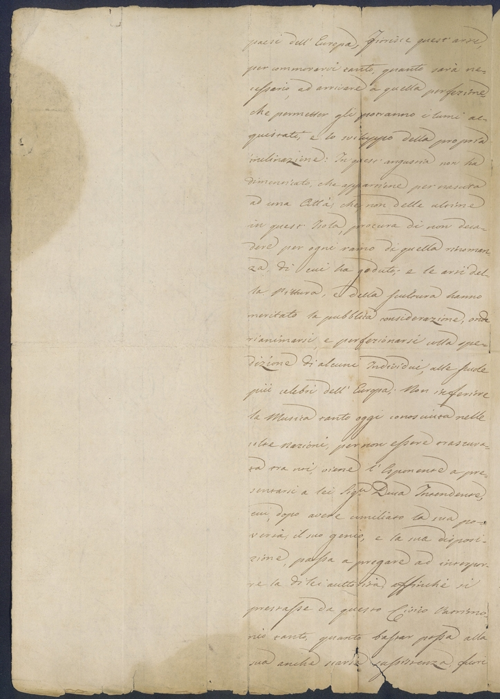
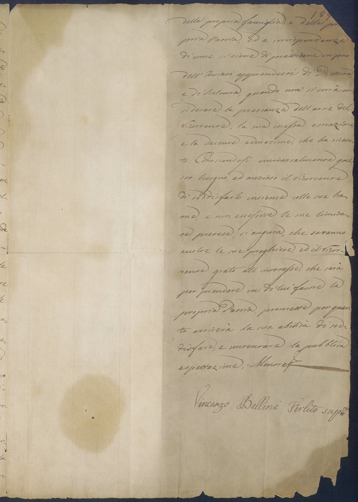
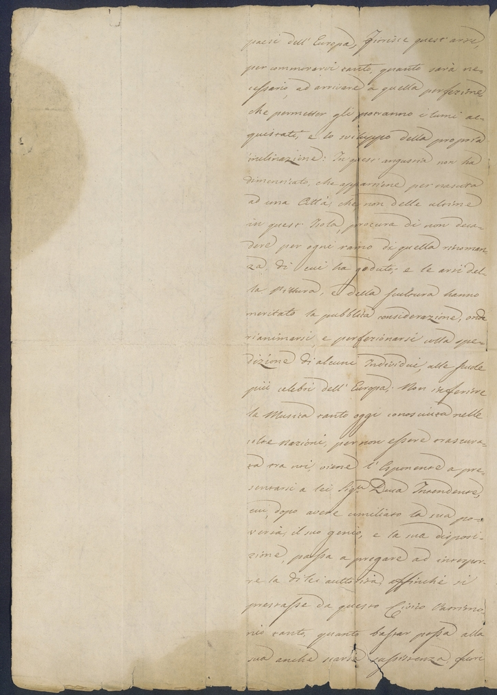
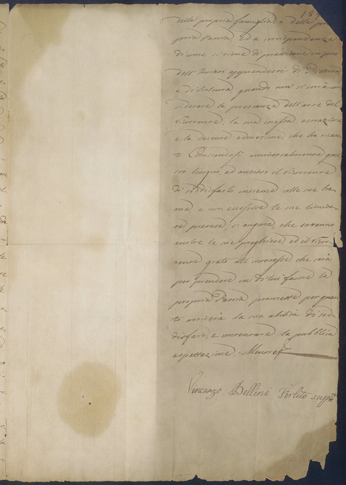
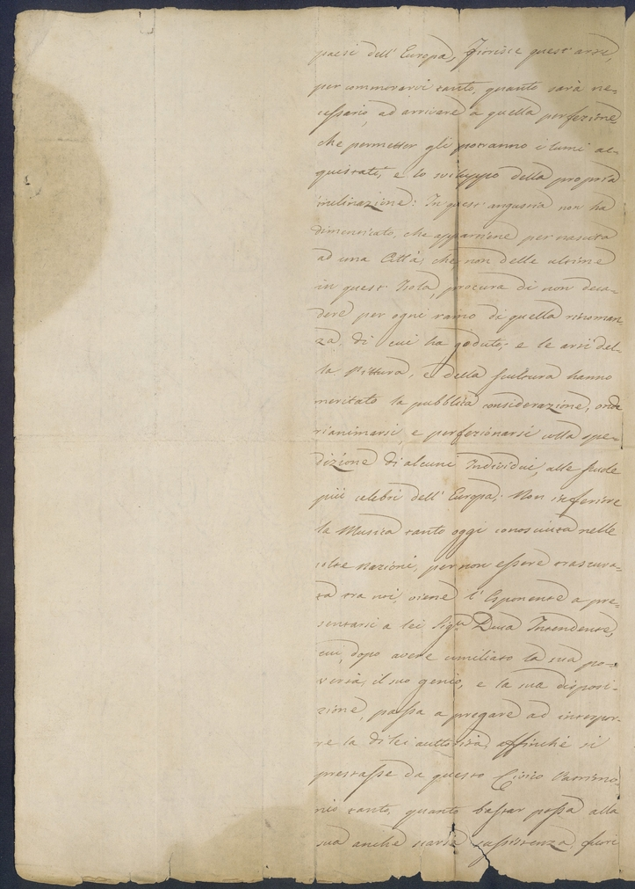
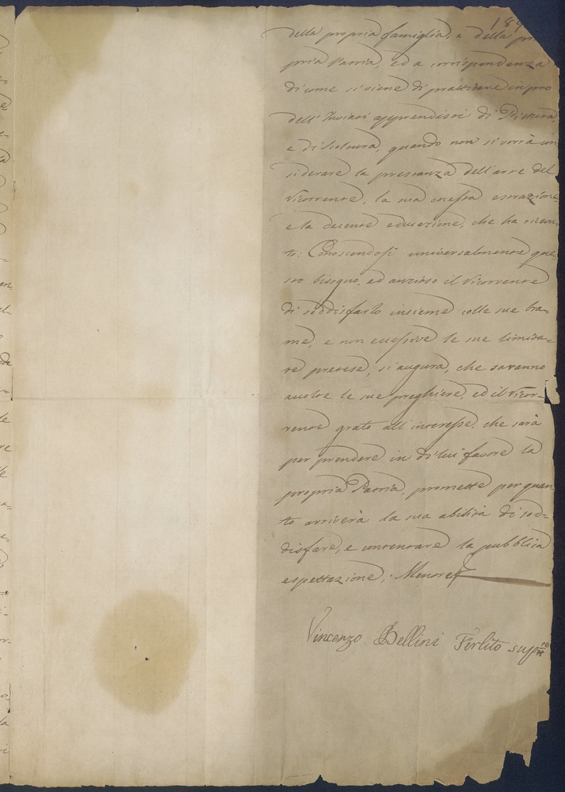

Italy, Catania; in esposizione Casa Natale, sala B, vetrina 2, ripiano 1, I.
All'interno del carteggio belliniano (LL), la segnatura LL1.1 identifica la prima missiva in ordine cronologico del primo sottogruppo, che corrisponde alle lettere scritte da Vincenzo Bellini.
Filigrana: Filigrana di forma circolare leggermente visibile raffigurante uno stemma, posizionata nella zona centrale del folio retro verso, visibile principalmente per metà, nella zona del folio non coperta da testo. La filigrana si espande per qualche centimetro attorno allo stemma. Sulla diagonale che congiunge il centro del folio all'angolo in alto a sinistra nella filigrana è riconoscibile una lettera B maiuscola.
Sigilli e timbri: Non sono presenti tracce di francobolli né di timbri postali.
Condizioni: Lettera in buone condizioni fisiche, composta da un solo folio suddiviso in tre facciate e piegato in più parti. Il testo della lettera è presente nella colonna destra di ogni facciata. Vi sono varie annotazioni non riconducibili a Bellini.
Segni particolari: La carta è sottile e di colore beige, con filigrana, l'inchiostro è marrone. La lettera presenta due lacerazioni, la prima nell'angolo superiore destro del fronte, la seconda in quello inferiore. I bordi sono tutti leggermente frastagliati a causa dell'invecchiamento.
Dimensioni: 302 x 213
Piegatura:
Il folio sembra essere stato piegato 3 volte, risulta infatti una divisione simmetrica in 8 sezioni di pari dimensione, ogni facciata viene così divisa in 4 sezioni rettangolari.
Annotazioni: Scrittura a mano leggibile, ha scritto il corpo della lettera. Vincenzo Bellini ha apposto solamente la firma, la supplica è stata scritto da questa prima mano.
Scrittura a 5 mani:
Scrittura a mano leggibile, ha scritto il corpo della lettera. Vincenzo Bellini ha apposto solamente la firma, la supplica è stata scritto da questa prima mano. Il folio retro recto presenta la firma apposta da Bellini. Nel folio fronte recto una terza mano ha scritto l'annotazione "Supp | 3. Mag 1819". Nell'angolo superiore destro del folio fronte recto è presente la nota "188" probabilmente attribuibile ad un catalogatore. Nell'angolo superiore destro del folio retro recto è presente la nota "189" probabilmente attribuibile allo stesso catalogatore. Nell'angolo superiore sinistro del folio fronte recto è presente un'annotazione di colore blu scuro somigliante ad una "B" o ad una "R", meno facilmente riconducibile alle iniziali "B V", probabilmente di mano di un secondo catalogatore.
Immagini del manoscritto originale:

Fronte verso
La lettera non presenta una busta sulla quale sia scritto l'indirizzo del destinatario, né sono presenti timbri, come detto in precedenza.
Il fronte presenta solamente il nome del destinatario e la città:
Duca Sammartino Intendente
della
La data in cui è stata scritta la supplica è deducibile dall'annotazione presente sul folio fronte recto che cita:
supp3. Mag 1819 SS88.
Vincenzo Bellini(about), e Vincenzo (about)Ferlito spinto dal
proprio genio, dall'esempio, e dalla
Educazione, che ha ricevuto dai suoi, Avo (Vincenzo Tobia Bellini(about)),
e Padre (RosarioBellini)(about), ha professato, com'eglino(about), la
Musica sin dai più teneri anni, nella sua appena giovanile età
ha prodotto alcune composizioni(about), il
merito delle quali, ignoto a lui(about), è
stato applaudito dai suoi amici,com-
patito dagl'indifferenti, e non di-
sprezzato dagli emuli. Volendo però
soddisfare quel desiderio inestinguibi-
le di apprendere nelle scuole su-
periori, e rinomate quel gusto, che si
ammira da stupidi nelle carte, che
qui pervengono, ma che non si sa, né
può imitarsi, mancandoci i principii,
ne viene impossibilitato dalla sua
povertà. Figlio (about) di un Padre (Rosario Bellini)(about) senza
rendite di sorte alcuna, e carico di
numerosa famiglia, e Nipote(about) di un
Avo (Vincenzo Tobia Bellini)(about) dell’uguale condizione, non può
sperare il menomo sussidio, di cui
ha preciso bisogno, per almeno portarsi
in Napoli(about), ove non men, che in altri
paesi dell'Europa, Fiorisce quest'arte,
per commorarvi(about) tanto, quanto sarà ne-
cessario, ad arrivare a quella perfezione,
che permetter gli potranno i lumi ac-
quistati, e lo sviluppo della propria
inclinazione: In quest'angustia non ha
dimenticato, che appartiene per nascita
ad una Città Catania(about), che, non delle ultime
in quest'Isola, procura di non deca-
dere per ogni ramo di quella rinoman-
za, di cui ha goduto; e le arti del
la Pittura, e della Scultura hanno
meritato la pubblica considerazione, onde
rianimarsi, e perfezionarsi colla spe-
dizione di alcuni Individui, alle Scuole
più celebri dell'Europa; Non inferiore
la Musica tanto oggi conosciuta nelle
colte nazioni, per non essere trascura-
ta tra noi, viene l'Esponente (VincenzoBellini) (about) a pre
sentarsi a lei (about) Duca Intendente(about) Duca di Sammartino(about),
cui, dopo avere umiliato la sua po-
vertà, il suo genio, e la sua disposi-
zione, passa a pregare ad interpor-
re la di lei (about), affinché si
prestasse da questo Civico Patrimo-
nio tanto, quanto bastar possa alla
sua anche scarsa sussistenza, fuori
189
della propria famiglia, e della
propria Patria, ed a corrispondenza
di come si viene di Duca Sammartino Intendente
della
in pro
dell'Inviati apprendisti di Pittura,
e di , quando non si vorrà con-
siderare la prestanza dell'arte del
Ricorrente(about)VincenzoBellini, la sua onesta estrazione,
e la decente educazione, che ha ricevu-
to:
Conoscendosi universalmente que-
sto bisogno, ed il Ricorrente(about) Vincenzo Bellini
di soddisfarlo insieme colle sue bra-
me, e non eccessive le sue limita-
te pretese, si augura, che saranno
accolte le sue preghiere, ed il Ricorrente(about)VincenzoBellini
grato all'interesse, che sarà
per prendere in di lui(about) favore la
propria Patria, promette per quanto
arriverà la sua abilità di sod-
disfare, e contentare la pubblica
aspettazioneVincenzo Bellini Ferlito(about)
Note:
StefanoNotarbartolo, duca di Sammartino, nel 1818 era stato nominato Intendente del Valle di Catania.
[Fonte:
Seminara 2017),
pagina 65-66]
La Supplica, in bella scrittura,
non è di mano di Bellini,
che appose solo la firma.
Nella prima facciata del foglio è scritto da una terza mano"Supp | 3. Mag 1819".
[Fonte:
Seminara 2017),
pagina 65-66]
Nella sua edizioneLuisaCambi dichiara di aver desunto il testo della
lettera dal giornale Bellini, a. IV, n. 84-85, 1879, 16 novembre (p. 18, nota 1);CarmeloNeri invece informa correttamente circa l'ubicazione dell'autografo presso il Museo Civico Belliniano di Catania.
Nondimeno entrambi offrono un testo mutilo, mancante della porzione di lettera contenuta nella seconda facciata del
documento, ripiegato in tre parti.
[Fonte:
Seminara 2017),
pagina 65-66]
RosarioBellini.Padre di Vincenzo, aveva sposato
AgataFerlito il 17 gennaio 1801; con lei si stabilì in un modesto appartamento di tre stanze ricavato dalle
dépendances del settecentesco palazzo , situato in Largo San Francesco a Catania. I due
coniugi ebbero sette figli:Vincenzo, il primogenito, nel 1801,Carmelo nel 1803,Francesco nel 1804,Michela
nel 1806,Giuseppa nel 1807Mario nel 1810,Maria nel 1813. Come il padre VincenzoTobia e come i fratelli
Carmelo e Mario, anche RosarioBellini operò a Catania come musicista e si dedicò prevalentemente al genere sacro.
[Fonte:
Seminara 2017),
pagina ]
VincenzoTobiaBellini.Nonno di Vincenzo,
studiò a Napoli al Conservatorio di Sant'Onofrio a Capuana con
CarloCotumacci e GiuseppeDol.
Dal 1769 è attestata la sua presenza a Catania;
risale a quell'anno il matrimonio con MichelaBurzì,
celebrato nella chiesa dei SS.santiFilippo e Giacomo.
Nella città etnea (Catania) compose drammi sacri e oratori, operò
come maestro di cappella presso il Monastero benedettino di S.santoNicolòl'Arena tra il 1784 e il 1793 e fu
stabilmente al servizio di IgnazioPaternòCastello,Vprincipe di Biscari.
[Fonte:
Seminara 2017),
pagina ]
Da intendersi per "dimorarvi";cfr.confronta la voce commorare in
TOMMASEO - BELLINI, vol. I, p. 1535: "Aff. al lat. aureo Commorari. Dimorare insieme"
[Fonte:
Seminara 2017),
pagina ]
AgataFerlitoF1778CataniaCataniaItalia(about)1842CataniaCataniaItalia(about)
Agata Ferlito (Catania, 1778 - 1842) apparteneva a una famiglia relativamente agiata poiché il padre
Carmelo era funzionario presso l'amministrazione catanese. Sposò Rosario Bellini(about)
il 17 gennaio 1801 e con lui si stabilì in un modesto appartamento di tre stanze ricavato dalle dépendances
del settecentesco palazzo Gravina Cruylas, situato in Largo San Francesco a
Catania (about). I due coniugi ebbero sette figli:
Vincenzo(about), il primogenito, nel 1801, Carmelo nel 1803, Francesco nel 1804,
Michela nel 1806, Giuseppa nel 1807, Mario nel 1810, Maria nel 1813.
FrancescoPaternòCastelloduca di CarcaciM15 agosto 1786CataniaCataniaItalia(about)8 aprile 1854CataniaCataniaItalia(about)220FrancescoPaternòCastello(about),
nel 1838– alla morte del nipote Mario– sarebbe diventato VII duca di Carcaci
e Gentiluomo di Camera di FerdinandoII,re delle Due Sicilie. Nel 1826 venne
nominato primodirettore(about) dell'Accademia Gioenia
di Catania(about) e fu autore di una Descrizione di Catania
e delle cose notevoli ne' dintorni di essa (Catania(about), Giuntini,
1841).Compositore(about) dilettante, era un ammiratore del musicista che si premurava di inviargli gli
spartiti(about) delle proprie opere.
Composizione
Processo creativo che concepisce un'opera d'arte e il prodotto stesso dell'atto
Commorare
Dimorare insieme
Genere sacro
Musica associata a tematiche sacre e religiose
Dramma
Opera diretta a riprodurre una vicenda che si fondi e si sviluppi su elementi di conflitto particolarmente significativi
Oratorio
Genere musicale drammatico eseguito in forma di concerto, senza rappresentazione scenica o personaggi in costume
Maestro di cappella
Persona responsabile della musica di una compagine
Compositore
Persona responsabile della musica di una compagine
SpartitoDirettore
Figura professionista nell'esecuzione di composizioni che coordina un gruppo di musicisti
 
